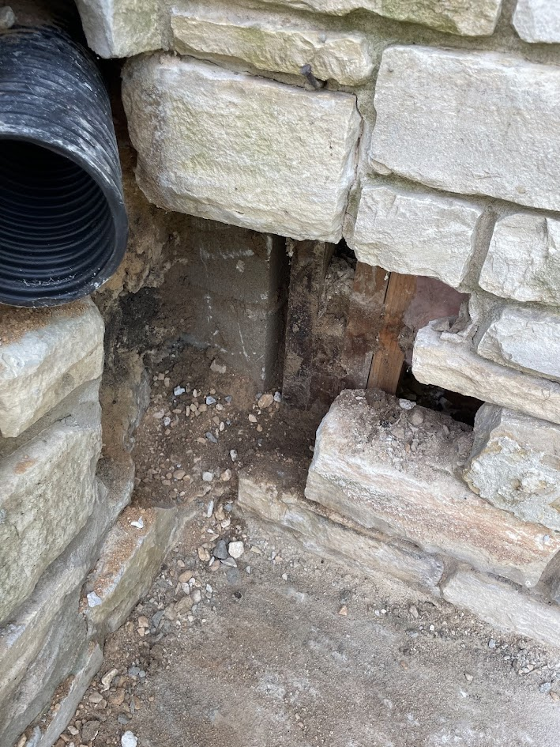
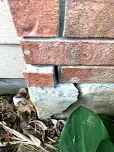
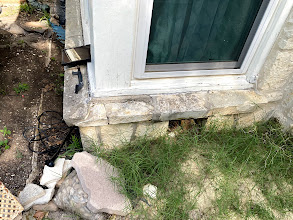
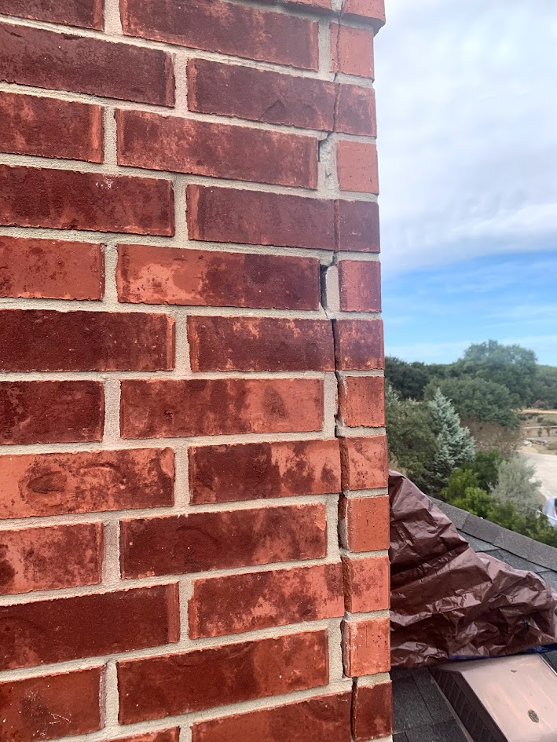

I thought the rats were bad. Truly, I did. A few months ago, we "evicted" a small colony of rodents from the attic and I thought, "Great, the guest wing is finally closed." I was wrong.
Apparently, word got out in the local animal kingdom that I have excellent insulation and a breached attic vent — because I now have a raccoon roommate. He doesn't pay rent, he's nocturnal, and judging by the sounds at 5:00 AM, he's currently attempting to rearrange my rafters into a mid-century modern floor plan.
While I wait for the wildlife specialist to perform the official "extraction and remediation," this whole ordeal has been a noisy reminder of one thing: proactive masonry maintenance is the only thing standing between you and a very expensive disaster. If a raccoon can take advantage of a tiny breach in a vent, imagine what they — and the elements — can do with the gaps in your brickwork.
Look at Your Home from a Critter's Perspective
When we talk about "minor" cracks, we often think about aesthetics. But to a pest, a crack is a "Welcome" mat. Take a look at these real-life examples from our inspections:
Photograph 1 — The VIP Entrance


Beyond Pests: The Silent Damage You Can't Hear
While my raccoon roommate is making a lot of noise, the real "silent killers" of your home are water and weather. Proactive inspection and maintenance can prevent these far more destructive — and expensive — issues:
- The "Freeze-Thaw" Explosion. Water is the greatest degrader of mortar. When moisture gets trapped in gaps, it expands as it freezes — literally breaking your masonry apart from the inside, causing visible crumbling and flaking.
- Structural Instability. Cracks that run vertically through both bricks and mortar are often signs of structural movement or settlement. If ignored, these can lead to "rust jacking" — corroded internal steel expanding and displacing stone — or even the failure of the lintels that support your windows and doors.
- The Scourge of Efflorescence. If you see white, powdery salt deposits on your brick, your wall is "leaking" salts as water migrates through it. If this water is stopped just below the surface — often by the wrong sealer — it can cause cryptoflorescence, where salt crystals expand behind the brick face and cause the brick to disintegrate.
- Vegetative Vandalism. While ivy looks classic, its "suckers" can penetrate voids in your mortar, conducting moisture deep into joints and eventually dislodging entire masonry units.

Catch It Early to Save Thousands
The math is simple: catching these issues early is significantly cheaper than waiting for a total failure.
| Repair Type | When It Applies | Relative Cost |
|---|---|---|
| Repointing (replacing failed mortar) | Early detection of crumbling or cracked mortar joints | 30–60% less than reconstruction |
| Reconstruction | More than 40% of bricks deteriorating, or wall is bulging/leaning | Significantly higher — and avoidable |
Take a house key and scrape it against your mortar joint. If it crumbles easily or you can dig out chunks, it's time to call in the professionals. Don't wait for a furry squatter or a falling brick to tell you there's a problem.
We recommend performing seasonal inspections to spot these gaps before problems set in. Whether it's a raccoon in the attic or water in your walls, uninvited guests are always expensive.
Don't wait for a furry squatter or a falling brick to tell you there's a problem. A spring masonry inspection is one of the best investments you can make in your home — and we're much better at fixing mortar than we are at wrestling raccoons.
Contact Us for a Professional Masonry Assessment
We'll find the problems before the raccoons do. Serving San Antonio, Boerne, New Braunfels, Seguin, and all of Central Texas.